РЫБЫ КРАСНОГО МОРЯ
рыбы бабочка

Пожалуй рыбы-бабочки являются одними из самых ярких и красивых представителей тропических морских рыб, без которых невозможно представить коралловые рифы Красного моря. Рыбы-бабочки относятся к роду тропических морских рыб из семейства щетинозубых отряда окунеобразных, они насчитывают 10 родов и до 130 видов. Все виды обитают в прибрежной полосе на коралловых рифах или скальных обнажениях на глубинах до 30 метров. В основном рыбы-бабочки живут поодиночке (нитепёрые, шевронные бабочки), некоторые виды – парами – масковые бабочки, иногда образуют стаи – кабубы, андаманские бабочки. Ведут дневной образ жизни. Питаются различными беспозвоночными, которых обычно извлекают из расщелин и других укрытий, собирают с поверхности рифов или объедают паразитов с кожи крупных рыб.
Дельфины

Дельфины (лат. Delphinidae) — семейство подотряда зубатых китов отряда китообразных класса млекопитающих. Как и все млекопитающие, дельфины дышат воздухом, поэтому они периодически должны подниматься на поверхность воды, чтобы сделать очередной вдох через видоизменённую ноздрю – дыхало, расположенное на темени. Слово дельфин происходит от греческого δελφίς (делфис), которое означает «матка», «лоно», «утроба». Таким образом название этого животного можно толковать как «новорожденный», «младенец» – возможно, из-за того, что крик дельфина похож на крик ребёнка. У дельфинов есть свой язык – это ультразвук и различные звуковые импульсы, например, щебет, жужжание, визги, скрежет, щёлканье, чмоканье, скрипы, хлопки, писк, рёв, вопли, крики, кваканье. Наиболее выразительными являются свисты, которых у дельфинов насчитывается 32 вида – это целая система сигналов, они могут обозначать определённую фразу: сигналы боли, тревоги, приветствия и призывный клич «ко мне» и т.д.
Иглобрюхие
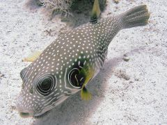Tetraodontidae – Иглобрюхие, или иглобрюховые, ещё их называют скалозубовые или четырёхзубые — семейство рыб отряда иглобрюхообразных, насчитывающее 26 родов и 188 видов. Распространены в субтропических и тропических морях. Самая примечательная черта иглобрюхих – это зубы, они как будто не помещаются во рту и создаётся впечатление, что рыба постоянно ухмыляется. Отсюда происходит русское название семейства, к которому принадлежат эти рыбы – скалозубовые. Латинское же название – Tetraodontidae – переводится, как четырёхзубые. Действительно, в каждой челюсти зубы сливаются в пару сплошных пластин с режущим краем, разделённых срединным швом. В сочетании с мощными жевательными мышцами, это очень удобный инструмент для разгрызания ракообразных, моллюсков, иглокожих. Зубы у иглобрюхих растут в течение всей жизни и, стачиваясь о твердые поверхности под определенным углом, постоянно остаются острыми.
Скоропневые
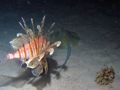К семейству Скорпеновых (лат. Scorpaenidae) относится свыше 20 родов и 209 видов. К скорпеновым относится также самая ядовитая морская рыба – бородавчатка (Synanceia) широко распространённая в Красном море. Форма их тела весьма разнообразна. Голова крупная, с большим количеством шипов, расположенных по краю предкрышечной кости, на костном гребне под глазом и в других местах. Глаза среднего размера или большие. Один спинной плавник разделен заметной вырезкой на переднюю часть из 7-18 шипов и заднюю с одним шипом и несколькими мягкими лучами. В анальном плавнике 2-4 мощные колючки с ядовитыми железами. По одной ядовитой колючке есть в брюшных плавниках. Большинство спинных колючек также снабжено ядовитыми железами. Спинной плавник у скорпеновых обычно разделен выемкой на две части: передняя часть образована колючками, а задняя состоит из двух колючек и мягких, ветвящихся лучей. В мощные колючки превратились и два-три передних луча анального плавника и наружный луч каждого брюшного. Вдоль каждой колючки тянутся две бороздки, по которым стекает ядовитая слизь.
мурены
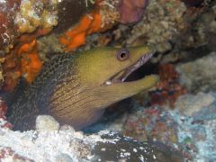Размер этих рыб варируется в очень широком диапазоне, длина самой маленькой мурены не превышает 11,5 см, это вид Anarchias leucurus, в Красном море который не встречается, а самая большая – это гигантская мурена, Gymnothorax javanicus, длина которой доходит до 3-х метров, а вес достигает 30 кг, эта мурена в Красном море распространена очень широко. Но самым крупным представителем муреновых является вид Strophidon sathete, длина этой рыбы доходит до 4 метров.Свою порочную репутацию мурены получили не совсем заслуженно. Несмотря на свой жуткий вид, они не нападают первыми, только если дайверы не проявляют к ним повышенное внимание, провоцируя, раздражая или пытаясь покормить этих хищников с рук. Кормление мурен из рук – весьма впечатляющее зрелище, но всегда представляет определенную опасность, поскольку поведение этих рыб трудно предсказать. Зрение у мурен довольно слабое, зато прекрасно развито обоняние, а внезапная агрессивность может быть связана с физиологическим состоянием, испугом, болезнью, или полученным накануне повреждением. Несмотря на отсутствие ядовитых зубов, укусы мурен очень болезненны и долго не заживают, при укусе мурена виснет на жертве мёртвой хваткой, подобно бультерьеру, при этом трясёт челюстью, нанося рваные раны острыми зубами. Освободиться самостоятельно обычно не удаётся, требуется помощь.
Охота мурен.Рыбы ангелы
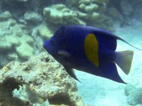 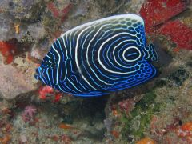 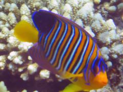Рыбы-ангелы довольно крупные – взрослые особи у разных видов могут достигать 60 см в длину (серая рыба-ангел). Молодь окрашена кардинально иным образом, чем взрослые рыбы, отличие в окраске настолько велико, что молодых особей раньше считали отдельными видами. Молодые рыбы-ангелы могут сосуществовать вместе со взрослыми рыбами, не будучи при этом изгоняемыми, но в целом, рыбы-ангелы в отношении сородичей-соперников действуют энергично и агрессивно, издавая при этом громкие щёлкающие звуки. Рыбы-ангелы обитают в тропических широтах всех мировых морей. Девять видов встречаются в Атлантическом океане, остальные в Индийском и Тихом океане. Обитают на коралловых рифах и в глубоких лагунах. Популярные рыбы в морских аквариумах. У рыб-ангелов весьма разнообразный рацион питания. Некоторые из них всеядны – питаются и водорослями, и мелкими животными. Другие питаются только губками и водорослями. Молодые рыбы-ангелы, а также и взрослые в некоторых регионах, к примеру около Галапагосских островов, чистят более крупных рыб, поедая паразитов с их чешуи. Рыбы-ангелы живут как правило парами или в небольших группах, состоящих из одного самца и нескольких самок. На рифах у них чёткие ареалы, которые они обороняют от соперников. У крупных представителей семейства размер ареалов может составлять свыше одного квадратного километра, у карликовых – лишь одну коралловую колонию.
Рыбы ежи
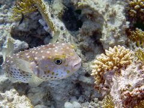Рыбы-ежи (Porcupinefishes) относятся к семействам Diodontidae, Molidae. Их короткое тело способно раздуваться, как у иглобрюхов. Зубы на челюстях слиты в клювовидные пластины без поперечного шва, поэтому на верхней и нижней челюстях оказывается по одному зубу (diodon по-латыни означает «двузубый»). Чешуи на теле преобразованы в шипы, иногда довольно длинные, которые в спокойном состоянии прижаты к телу, а при раздувании рыбы поднимаются вертикально. Небольшие спинной и анальный плавники лишены шипов и сдвинуты к хвосту. Брюшные плавники отсутствуют. Основная масса этих рыб среднего размера, но некоторые виды могут достигать одного метра в длину. Икра пелагическая (терм.), так же, как и личинки, молодь довольно долгое время развивается в толще воды. Окраска молоди отличается от окраски взрослых рыб.
Скаты
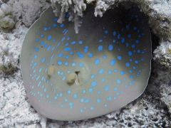Придонные скаты питаются крабами, креветками, раками, моллюсками, червями и рыбой, ведущие пелагический образ жизни – планктоном и рыбой. В отличие от акул, у скатов нет острых режущих лезвиевых зубов, их шиповидные зубы в сечении представляют собой сильно вытянутый овал. Расположение глаз на верхней стороне диска не позволяет скатам увидеть вблизи свою добычу, но зрение не имеет большого значения в их питании, скаты обладают электрорецепторами, расположенными на туловище и особенно многочисленными на нижней поверхности головы. С помощью этих рецепторов они воспринимают очень слабые электрические поля, которые возникают при движении их жертв, чем хищники и пользуются при охоте. Электрические скаты способны испускать мощные разряды тока, которые парализуют добычу и отпугивают врагов. Скаты обитают во всех морях и океанах в очень широком диапазоне температур – от 2оC до 30оС, они встречаются как в холодных водах Арктики и Антарктики, так и в тропических водах у самого берега на глубине менее метра. Известны и глубоководные виды, обитающие на глубине 2500—2700 м. Скаты имеют промысловое значение. Нельзя сказать, что их вылавливают в промышленных масштабах, но во многих регионах скаты очень популярны у рыбаков. Например, мясо используется в восточной кухне, плавники, приготовленные по особым рецептам, считаются в Португалии деликатесом, хрящи используют как в народной, так и в традиционной медицине, из прочной кожи изготавливают кошельки, ремни, сумки. Из высушенных ромбовых скатов изготавливают гротескные сувениры, называемые “Дженни Хэнивер”. (ист. сайт Рыба-фиш по эйлатски)
Хирурговые
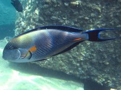Семейство Хирурговые (Acanthuridae) – морские лучепёровые рыбы отряда окунеобразных. Насчитывает 9 родов и 72 вида. Они распространены в основном в Тихом и Индийском океанах, несколько видов встречается в Атлантическом. Обитают в тропических водах вокруг коралловых рифов, в скалистых и каменистых лагунах. Хирурги ведут дневной образ жизни, встречаются поодиночке, парами и небольшими стайками. Рыбы-хирурги отличаются высоким, овальным, сильно сжатым с боков телом, которое покрывает очень мелкая ктеноидная чешуя (терм.). Размеры взрослых особей у разных видов варьируются от 20 до 50 см. Спинной и анальный плавники довольно длинные, без вырезов. Небольшой рот снабжен множеством мелких зубов, расположенных в один ряд. На хвостовом стебле с каждой стороны есть костный острый ножевидный подвижный шип, который может убираться в специальную канавку или выставляться перпендикулярно поверхности тела.
Рыбы-солдаты
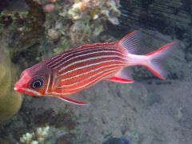Рыбы-солдаты или Рыбы-белки относятся к семейству Голоцентровых – Holocentridae. Насчитывают 4 рода и около 70 видов. Обитают, как правило, на мелководных коралловых рифах. Рыбы-солдаты обычно проявляют свою активность ночью, а днем прячутся в пещерах, расщелинах коралловых рифов и под неглубокими кораллами у самого дна. Но и днём их часто можно увидеть, осторожно проплывая вдоль стенки рифа. Они с любопытством выглядывают из своего убежища, часто выстраиваясь в несколько вертикальных рядов, но с приближением опасности быстро прячутся. Рыбы-солдаты – это небольшие большеглазые рыбы с овальным, умеренно сжатым с боков телом. В окраске Рыб-солдатов преобладает красный цвет, который в ночное время становится плохо видимым и играет роль своеобразного камуфляж.В анальном плавнике 4 шипа, один из которых очень крупный. По одному шипу в брюшных плавниках. Органы обоняния располагаются в треугольной ямке перед глазом. Чешуя на туловище крупная, с колючими краями. Чешуей покрыты также щеки и жаберные крышки. У некоторых видов на углу предкрышечной кости расположен направленный назад шип с ядовитой железой. Питаются Рыбы-солдаты крупным планктоном, донными ракообразными и мелкой рыбой. Икра пелагическая (терм.), так же, как и личинки. Нередко личинки встречаются довольно далеко от берега, где их шансы на выживание невелики.
антисы
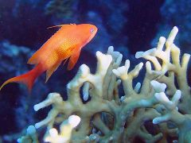Антиасы или как их ещё называют, Сказочные окуньки, составляют подсемейство Anthiinae семейства каменных окуней (Serranidae). Встречаются в тропических водах всех океанов, наиболее широко распространены в Красном море, вдоль всего восточного побережья Африки, в Персидском заливе и в западной части Тихого океана – Малайзия, Индонезия, Гавайи, Океания. Впервые этот вид описал Карл Линней в 1758 году, наблюдая их в Средиземном море и Северной Атлантике. Антиасы составляют значительную часть населяющих коралловые рифы ярких и разноцветных рыб, которых можно увидеть на многочисленных фотографиях и в научно-популярных фильмах о подводном мире. Это в основном небольшие и очень распространённые в морской аквариумистике рыбки. Так как они являются протогеничными гермафродитами, т.е., все рыбки рождаются самками, этот вид образует сложные социальные структуры, основанные на количественном преобладании самок над самцами, их положении на самом рифе и количестве зоопланктона, которым они в основном питаются.На рифе антиасы составляют группы, называемые “гаремами”, в которых на одного доминирующего самца приходится до 12 самок. Есть сообщения, что в гареме может быть на одного самца и до 500 самок (не проверено!). Самцы контролируют отдельные участки территории рифа, занимаемые стаей и нерестятся с самками своего гарема. В свою очередь среди самок также имеется иерархия – в стае присутствует 1-2 главенствующих самки, которые занимают положение субдоминантных самцов, они менее ярко окрашены и не занимаются охраной территории и гарема. В случае гибели самца, главенствующая самка меняет пол и сама становится доминирующим самцом. Антиасы ведут дневной образ жизни, активно кормятся в толще воды зоопланктоном, в первую очередь, ракообразными, а также плавающими личинками донных беспозвоночных животных и икрой рыб.
Рыбы попугаи
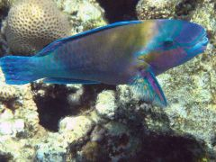Рыба-попугай (Parrotfish) относится к семейству скаровых (лат. Scaridae) отряда окунеобразных, отличается невыдвижным ртом и особым строением зубов – сросшиеся резцы на челюстях образуют подобие клюва попугая. Каждая челюсть состоит из двух пластин, разделенных швом. Такое строение рта позволяет попугаю легко откусывать кусочки кораллов. Рыбы-попугаи отличаются большим многообразием цвета, оттенков, строением головы и размерами. Среди всего разнообразия обитателей коралловых рифов они выделяются крупными размерами и своей яркой окраской, иногда для того, чтобы их увидеть даже не надо нырять. Рыбы-попугаи обладают мощным лбом и окрашены в различные оттенки синего и зелёного цвета с вкраплениями красных и жёлтых пятен. Молодь совершенно не похожа на взрослых рыб, она одноцветна с тёмными крапинами, пятнами и полосами. В спинном плавнике, как правило, 9 шипов и 10 мягких лучей. В анальном плавнике – три колючих шипа и 9 мягких лучей. Хвостовой плавник с 11 разветвленными лучами, у некоторых видов крайние верхний и нижний лучи могут быть значительно длиннее остальных. Чешуя крупная циклоидная (терм.). В позвоночнике 25 позвонков.По утверждению Fishbase.org, первое описание рыбы-попугая относится к 1601 году, название происходит от греческого skairo – прыгать (??? αλλομαι – алломаи, здесь: http://translate.academic.ru), вероятно связанное с прыжками над водой и ударами хвоста, что очень хорошо было известно древним рыбакам. Рыба-попугай ведёт одиночный образ жизни, держится на “своём” участке, в случае опасности и на ночь укрывается в пещерах или расщелинах коралловых рифов. Практически не покидает своего ареала обитания, т.к. основная пища попугаев находится только на коралловых рифах. С наступлением ночи рыба-попугай выделяет вокруг себя слизь, образуя защитную оболочку, которая препятствует распространению запаха и уберегает от ночных хищников. Основная среда обитания – тропическая и субтропическая зоны трёх океанов: Атлантического, Индийского и Тихого. Рыба-попугай не агрессивна, медлительна, совершенно не обращает внимание на плавающих вокруг дайверов и снорклеров, занимаясь своими делами. Пожалуй, вместе с аравийским хирургом, рыба-попугай – самая удобная для фотографирования. Рыба-попугай лакомится кораллами
продолжение